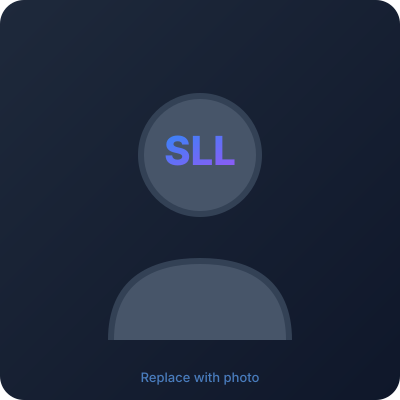

Lau Sian Lun
Professor Ts. Dr.-Ing.
Researcher · Educator · IEEE Senior Member
I am a Professor at the School of Computing and Artificial Intelligence, Sunway University, Malaysia, serving as Deputy Dean (Internationalisation). My research lies at the intersection of ubiquitous computing, sustainable smart cities, context-awareness, and applied machine learning.
Prior to joining Sunway University in 2013, I spent nearly a decade as a researcher at the University of Kassel, Germany, where I earned both my MSc and Dr.-Ing. and contributed to multiple EU and German national research projects.

Research Interests
Exploring the convergence of computing, context, and sustainability
Ubiquitous Computing
Designing computing systems that seamlessly integrate into everyday environments, enabling natural and unobtrusive human-computer interaction through smartphones and wearable devices.
Sustainable Smart Cities
Developing intelligent urban solutions that optimize energy consumption, improve public services, and create more sustainable, liveable cities through IoT and data-driven approaches.
Context-Awareness
Building systems that understand and adapt to user context — activity, location, environment — to deliver personalized and responsive services automatically.
Applied Machine Learning
Applying ML techniques including federated learning, activity recognition, and deep learning to solve real-world problems in IoT, security, and sustainability domains.
IoT Security & Trust
Investigating trust-aware authentication and authorization mechanisms for IoT ecosystems using federated machine learning approaches.
AI Ethics & Governance
Contributing to responsible AI development as a member of Z-Inspection, a framework for assessing trustworthy AI systems across societal dimensions.
Selected Publications
80+ peer-reviewed papers across journals, conferences, and book chapters
Trust-Aware Authentication and Authorization for IoT: A Federated Machine Learning Approach
IEEE Internet of Things Journal
Sustainable AI in the Cloud-to-Thing Continuum: A Bibliometric Review on Lightweight, Small-Sample, and Federated Learning Approaches
Journal Article
Context Recognition and Ubiquitous Computing in Smart Cities: A Systematic Mapping
Computing (Springer)
Towards a User-Centric Context Aware System: Empowering Users Through Activity Recognition Using a Smartphone as an Unobtrusive Device
Conference Paper
Movement Recognition Using the Accelerometer in Smartphones
Conference Paper
Supporting Patient Monitoring Using Activity Recognition with a Smartphone
Conference Paper
Research Projects
Funded research spanning international collaborations across Europe and Asia
DeepSpray+
Improved post-processing of images from liquid atomization simulations using deep learning techniques.
U.S. Army International Technology Center PacificSustHack
Synchronizing sustainable development actions between Finland and Malaysia using the hackathon approach for cross-cultural innovation.
Finnish National Agency for Education (EDUFI)ProtoPolicyAsia
Empowering local communities and government in Malaysia in addressing social issues in ageing and disabilities through policy prototyping.
UK AHRC GCRF GrantDriver Attention Management for Onroad Safety
Enhancing road safety through IoT sensors and context-aware systems that monitor and manage driver attention in real-time.
Research ProjectSEAM4US
Sustainable Energy mAnageMent for Underground Stations — developing advanced technologies for optimal and scalable control of metro stations targeting 5% energy savings.
EU FP7 (Energy-Efficient Buildings)EU & German National Projects
Contributed to EU FP6 MobiLife, ITEA S4ALL, and BMBF MATRIX projects during tenure at the University of Kassel, Germany.
EU / BMBF GermanyTeaching & Supervision
Shaping the next generation of computing professionals
Teaching Philosophy
I believe in active, project-based learning that bridges theory with real-world applications. My courses integrate hands-on projects, industry collaboration, and design thinking methodologies to prepare students for the challenges of modern computing.
Student Supervision
Throughout my academic career, I have been fortunate to supervise many bright students at both undergraduate and postgraduate levels. My students work on projects spanning IoT, machine learning, smart city applications, and sustainable computing.
Design Thinking
I actively promote design thinking in education, including mentoring students in hackathons like the Low Code-A-Thon at Sunway University, encouraging innovation through human-centred problem solving.
Academic Leadership
As Deputy Dean (Internationalisation), I work to build cross-border academic partnerships and create opportunities for students to gain global perspectives through exchange programmes and collaborative projects.
Professional Activities
Service, leadership, and engagement with the global computing community
IEEE Computer Society Malaysia
Vice-Chair (2023–2024), Secretary (2021–2022), Executive Committee (2017–2020)
IEEE Senior Member
Senior Member of the Institute of Electrical and Electronics Engineers (No. 90886544)
Z-Inspection
Member of the Z-Inspection initiative for assessing trustworthy AI systems
ICT4S Conference
Active contributor to the International Conference on ICT for Sustainability (2022, 2025)
External Examiner
Serving on university advisory and external examiner panels across Malaysia
Invited Talks & Workshops
Guest lectures and workshops at conferences across Southeast Asia and beyond
The Future is Now
Reflections on the accelerating pace of technological change and what it means for education and society.
Read moreDesign Thinking at Low Code-A-Thon
Sharing design thinking methodology with students participating in the Low Code-A-Thon competition at Sunway University.
Read moreBeing Job Ready = Being Future-Ready?
Exploring the relationship between job readiness and future-readiness for graduates in a rapidly changing world.
Read moreAre You Afraid to Be the First?
On the courage required to pioneer new ideas and lead by example in academia and beyond.
Read moreLet's Connect
I'm open to research collaborations, invited talks, student supervision, external examiner roles, and conversations about computing, sustainability, and education.